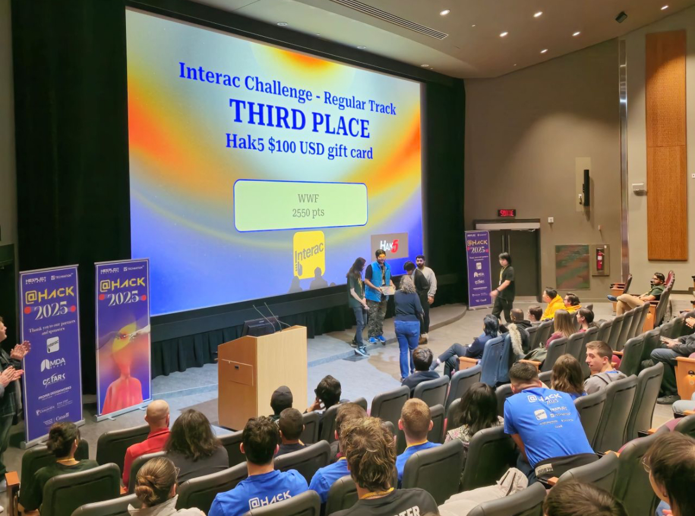

$ cat tmx_group.log
SOC — TMX Group
Social engineering campaigns, KRI analysis and human-layer defense for the Toronto Stock Exchange's critical market infrastructure.
ARMAAN SIDHU
▍INITIALIZING CONSTELLATION
0%
Headphones recommended · scroll or swipe to fly
> DESCENDING · SECURITY LAYER
TMX GROUP — TORONTO STOCK EXCHANGE
> TRACING THREAT VECTORS
OSINT · KRI ANALYSIS · SOC OPERATIONS
> HARDENING AI PIPELINES
AMERICAN EXPRESS — GENAI SECURITY · PQC
[ CONSTELLATION ONLINE — 2026 ]
That's me at my desk, drawn in starlight from a real photograph. Scroll, and the camera dives into my eye — down a data tunnel, through the sun, all the way to the vault.
CYBERSECURITY × GENAI × AUTHOR
[ ACCESS GRANTED — STATION 02 ]
The stars you flew through just became this padlock. In the full site every section is a station on this flight path — the constellation re-forms into a new shape for each chapter.
$ cat tmx_group.log
Social engineering campaigns, KRI analysis and human-layer defense for the Toronto Stock Exchange's critical market infrastructure.
$ cat american_express.log
LLMOps hardening, secure AI/ML pipeline integration and risk mitigation across production systems at American Express.
$ ./pqc_research.sh
Post-quantum cryptography readiness — preparing enterprise cryptography for the next era of computing.
[ CONTENT LAYER — PHOTOS & TEXT OVER THE SKY ]
Real content sits on frosted glass — blurred, never solid. The constellation keeps moving behind every panel, photo and caption, and nothing ever covers the whole screen, so the sky always breathes around the edges.

Next in the full build: Station 03 a neural core (GenAI) · Station 04 an open book (One Night in Trombay) · Station 05 a maple leaf (Canada & networking) · Station 06 a beacon (contact). One continuous flight, no page loads.